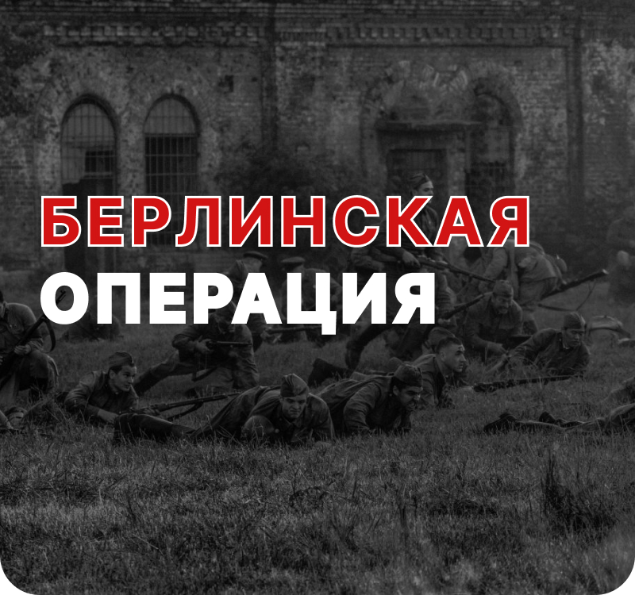

Взять Берлин поручалось войскам 1-го Белорусского, которые в течении двух недель после этого должны были выйти к реке Эльба. 2-й Белорусский должен был «очистить» земли к северу от Берлина и выдавить немцев к Балтике. 1-му Украинскому ставилась задача изолировать с юга группу армий Центр от берлинской группировки и за 10 дней достичь Эльбы в районе Дрездена. Итогом Берлинской операции должен был стать не только захват столицы Германии и соединение с союзникам, но и полная капитуляция боеспособных частей третьего рейха. Захватить Берлин быстро было важно и потому, что часть немецкой верхушки начала переговоры с представителями союзников — для заключения с ними сепаратного мира, направленного против СССР.
Сделав около 15 тысяч (!) аэрофотоснимков в штабе 1-го Белорусского фронта получили точный макет Берлина для создания плана его штурма и боев в ключевых точках столицы. 14 апреля три десятка передовых отрядов провели разведку боем для вычисления огневых точек противника. А саперы навели через Одер 25 мостов и 40 паромных переправ. Взятие Берлина обеспечили пять фронтовых операций.
Главный удар поначалу наносили 5 общевойсковых и две танковые армии 1-го Белорусского фронта с Кюстринского плацдарма (60 км до Берлина). 25 апреля кольцо вокруг Берлина сомкнулось. Непосредственно столицу штурмовали 6 армий 1-го Белорусского и 3 армии 1-го Украинского фронтов. В их составе было до 460 тысяч человек, полторы тысячи танков и самоходок, 12 700 орудий и минометов. Им противостоял 200-тысячный гарнизон, имеющий не менее 3000 орудий и около 250 танков.
К 27 апреля немцы держали оборону на полосе в 16 км длиной и от 3 до 5 километров шириной. К вечеру 28 апреля части 3-й ударной армии вышли к рейхстагу. Соседнее с ним здание МВД было захвачено утром 30 апреля. И хотя первое знамя на крыше рейхстага было водружено в тот же день в 14:25, его гарнизон капитулировал лишь в ночь на 2 мая. В 6 утра 2 мая командующий обороной Берлина генерал Вейдлинг с тремя генералами сдался в плен и подписал приказ о капитуляции. К концу дня войска 8-й гвардейской армии Чуйкова очистили центр Берлина.
Берлинская операция привела не только к падению столицы третьего рейха и деморализации и сдачи в плен той части фашисткой верхушки, которая оставалась в живых. После 2 мая и вплоть до 8 мая, когда был подписан акт о капитуляции Германии, масштабных оборонительных или наступательных действий со стороны остатков вермахта практически не велось, а около 200 тысяч заключенных нацистских лагерей в зоне операции были освобождены.